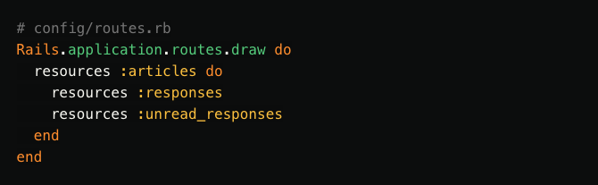

RUDOLF IVANKOVIC
Experienced Web & Mobile DeveloperBlog Posts
JavaScript-sprinkled Rails Applications
Rails' fragment caching produces greater speedups when a bigger part of the page is cached. This is more difficult for pages with a lot of dynamic or user-specific content.
A solution is to use “JavaScript sprinkles”, which is like hagelslag, but without the chocolate and with extra requests to load user-specific content after the rest of the page is directly served from the cache.
Fragment caching
Techniques like fragment caching are used to speed up responses in Rails
applications by caching fragments of the rendered page.
By using smart cache
keys, the fragments are automatically invalidated when their content changes
because the data shown in the view is updated.
Caching view fragments provides a larger speed boost from a smaller cache when
the cached fragments are used more often.
When the content of the page
depends on the currently signed in user, for example, caching the page's
fragments becomes more difficult.
Unread Responses
As an example, let's take a Rails-based blog.
On this blog, each article can have
a number of responses.
An authentication system was added to allow users to sign
in and post responses with their accounts.
On each article page, we list the
responses.
To make it easier for our users, we mark the new responses with an
icon and a different background color.

If we wrap each article in a cache block, we run the risk of marking the wrong responses as unread. When a user requests the index page, the response is cached. When another user requests the same page later, they will receive the cached fragment, with the unread responses of the first user.
A way to solve this is by adding the currently signed in user to the cache key by using [@article, @current_user] instead of just @article as the argument passed to the cache helper method.
This ensures that each user sees their own unread responses, but negates most of the speedup from caching the fragments, as the article fragments are now cached separately for each user.
JavaScript Sprinkles
Since most of the page is the same for all users, we'd like to reuse the cached article fragment for each visitor. To do this, we can load the article from the cache and add an extra request to fetch the user-specific content after the page is loaded through a JavaScript request. Using a sprinkle of JavaScript functionality for this has a couple of advantages:
The page can be cached once and be reused for unauthenticated guests, as well as other users without having to separately cache fragments for every user.
The most important content is loaded first for the fastest response time and secondary features, like the unread count, are loaded later.
Since the extra request is done via JavaScript, the whole page can be edge-cached on a CDN to further improve performance.
Cleanup
We'll first remove the dynamic content from our pages to make them easier to cache. We'll remove the @current_user from the cache key in the cache block again, so they're no longer cached for each user. Then, we'll remove the query that finds the unread counts from the controller, and remove the CSS class names from the view.
We're left with a generic page that is easier to cache but lacks our unread responses feature. Let's add it back.
The Endpoint
We'll first create an endpoint to find the unread responses for a user. We'd like to alter the current state of the page after it's been rendered, so we'll request JSON from it.

Our endpoint will produce a list of unread response IDs.
Tip: When loading a dynamic component that can be pre-rendered on the server, it's usually faster to do the HTML rendering on the server side, then inject the HTML into your page directly via JavaScript.
Showing Unread Responses
Instead of hardcoding the URL for the unread responses endpoint in the JavaScript code, we'll add it to a data attribute in the view, so we can refer to it later.
After the page has completed loading, we'll request the unread response IDs from our new endpoint. We'll then use the data from that list to mark each article as unread by adding a CSS class to it.
Because our Rails application uses Turbolinks, we'll wait for the page to be loaded by listening for the turbolinks:load event. When that event fires, we'll find the responses box using its ID.
We'll then check if the responses element has a loaded data attribute. We'll set this attribute after updating the unread responses later on, so we don't make any extra requests in case the page is reloaded using the browser's back button.
On the first load, the loaded attribute isn't set yet, so we'll continue to make the request to our endpoint. On success, we'll loop over each article in the returned result, find the response's element by its ID, and add our "unread" CSS class to it.
Sprinkles!
Fragment caching reusable content and sprinkling JavaScript onto your pages to add user-specific dynamic bits later on can make your app's initial response time faster by serving most of the important content straight from the cache. Although it takes time to do an extra request and update the page after the main content has been loaded, deferring dynamic content will make your app feel snappier, even when the full request takes longer than serving everything, including the user-specific parts, from the cache.
For more elaborate setups, be sure to check out Stimulus, a JavaScript library that wraps the sprinkles pattern into a framework that ties your HTML views to your JavaScript.
We hope you liked this introduction to JavaScript sprinkles in Rails applications. We'd love to know what you thought of this article, or if you have any questions. We're always on the lookout for topics to investigate and explain, so if there's anything magical in Ruby you'd like to read about, don't hesitate to leave a comment.